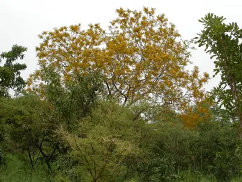

pranet · 出典付きの植物図鑑
アフリカローズウッド ☠
Pterocarpus erinaceus Poir. · Fabaceae

アフリカローズウッドあるいはアフリカキノカリン は、西アフリカのサヘル地域に自生する樹木であり、主に木工の材料として用いられ、薪や薬としても使用されるほか、ほとんど栄養分が失われている農地の土壌を改良する助けになる窒素固定の作用が大きい植物として有用である。様々な呼称があり、バーウッド (barwood)、ムニンガ (muninga)、ヴェネ (vène)、ムクワ (mukwa) などとも呼ばれるが、こうした名称はインドカリン属の他の種を含めて用いられることもある。西アフリカのサバナでは良く見つかるが、近年では減少が著しく、希少なものとなりつつあり、一部では栽培もされている。また、コートジボワールのコモエ国立公園のように、地理的にはサヘルに近いものの2本の大河が近傍を流れている関係で湿度が高い地域では、森の中にも生えている。ナイジェリアのタラバ州クルミでも豊かな植生が見られる。樹木の高さは平均11メートルに達し、樹皮は暗色で鱗状、黄色い花をつける。また、羽根のついた莢の形をした実を結ぶ。アフリカローズウッドは、日射の強いアフリカの平地でよく育ち、長い乾季や、火災にも耐える。
出典: Wikipedia 日本語版「アフリカローズウッド」 · CC BY-SA 4.0
異名: Drepanocarpus senegalensis T.Nees & C.H.Eberm., Echinodiscus erinaceus Benth. ex Walp., Lingoum erinaceum Kuntze, Pterocarpus adansonii DC., Pterocarpus africanus Hook., Pterocarpus senegalensis Vahl ex DC.
同定や利用は自己責任でお願いします。この図鑑だけを根拠に野生の植物を食べないでください。
出典
- 学名: World Flora Online Plant List 2026-06 · CC0 1.0
- 名前: Wikipedia の記事名と Wikidata · CC0 1.0（Wikidata）。記事名は事実
- 説明: Wikipedia 日本語版「アフリカローズウッド」 · CC BY-SA 4.0
- 食用・毒性: World Checklist of Useful Plant Species (Diazgranados et al. 2020, RBG Kew) · CC BY 4.0
- 分布: World Checklist of Vascular Plants (WCVP), RBG Kew, version 2026-06-04 · CC BY 3.0
このページは pranet のデータから自動生成しています。コードは MIT、データは項目ごとのライセンス（説明）。